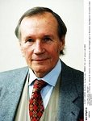
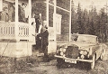
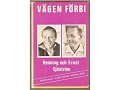

Henning Elof Sjöström
Advokat, författare. Blev 89 år.
| Född: | 1922-05-13 Bergviken 1:5, Burträsk sn. [1] | |
|---|
| Levde: | 1971 Lilla Skärfsta, Östertälje fs, Södertälje kn. [2] | |
|---|
| Död: | 2011-10-16 Strandvägen 15, Oscars fs, Stockholms stad. | Advokaten Henning Sjöström avled i morse efter en längre tids sjukdom..Han blev 89 år och vårdades på slutet på Sofiagården i Stockholm.
-Henning fick ett värdigt slut, säger hustrun Kerstin Sandels-Sjöström i ett uttalande.
|
|---|
| Vigsel: | 1968-10-19 Oscars fs, Stockholms stad. [3] |
|---|
| Levde: | 1981 Krabaten 2, Strandvägen 15, Oscars fs, Stockholms stad. [4] |
|---|
| Levde: | 1991 Krabaten 2, Strandvägen 15, Oscars fs, Stockholms stad. [5] |
|---|
| Levde: | 2009 Strandvägen 15, Oscars fs, Stockholms stad. [6] |
|---|
Noteringar
Henning Elof Sjöström, född 13 maj 1922 i Burträsk, Västerbottens län (Västerbotten). Svensk advokat.
I sin ungdom ägnade sig Sjöström bland annat åt friidrott. Han tävlade för Skellefteå AIK och tillhörde en tid den svenska eliten i spjutkastning. Hans personliga rekord, som sattes 1944, är 69,72 m.
Hans genombrott som advokat kom på 1960-talet då han vann ett uppmärksammat mål om de s.k. neurosedynbarnen.
Henning Sjöström är även en flitig författare med såväl skönlitteratur som facklitteratur.
Bibliografi
Skönlitteratur
Vägen från byn (1963)
Vägen förbi (1965) (tillsammans med Ernst Sjöström)
Intervju i Norra Västerbotten av Olle Lundqvist 2008-03-08
Färgstark och fjärran från byn
Oss emellan och i förtroende sagt har jag fått mer än ett grått hårstrå och hur ska jag hantera dem?”Klä dig färgstarkt”, säger Henning Sjöström.
”Rött, grönt eller gult. Rosa! Gunter Sachs väljer ofta ljust rosa”.
Nej, inga prickar över u:et.
”Gonter, inte Gynter”, förtydligar och artikulerar Henning som är hans gode vän.
Henning Sjöström är både tydlig och artikulerad. Uttalar, liksom en gång Sara Lidman, varenda bokstav.
Det bestämde han sig för när han började läsa juridik. Hur övertygande skulle hans pläderingar ha låtit på Burträskmål?
Även klädmedvetenheten har koppling till jobbet, men än mer handlar det om inställning till livet.
Om att ta för sig av det bästa det har att erbjuda.
Denna onsdag sitter han hemma och skriver på en bok, hans 49:e, som ska handla om hans liv och några av hans rättsfall och kommer ut om några månader.
Läge för kreativ mysmundering från Intersport?
”Aldrig! Jag skulle känna mig skitig!”
Nej, han lever som han lär. Skjortan är för dagen rosa, tröjan kraftigt grön, kavajen ljusare grön och stiligt mönstrad. Scarfsen vinröd, näsduken i bröstfickan likaså. Byxorna ljusa, vitare än beiga, med skarpa pressveck och uppslag. Skorna bruna och i mocka.
Mode?
”Inte alls. Jag väljer kläder jag trivs med och de ska vara av hög kvalitet. Den känner man med fingrarna.”
Kvalitet kostar, men han har alltid unnat sig, vare sig han haft råd eller inte.
”Man kan ta för sig, men man måste ha förtjänat det och det får inte gå ut över någon annan”.
Lägenheten vid Strandvägen är gigantisk. Finare adress finns inte, utsikten är magnifik och ... ja, låt oss inte fastna i kvadratmetrar, summor och inredningsdetaljer, men så här såg det inte ut i Bergviken, Burträsk.
I lägenheten har Henning Sjöström bott sedan 1956, utom på somrarna då han och hustrun Kerstin Sandels drar ut till den egna ön, intill Dalarö i Stockholms skärgård.
I garaget en bit bort står hans Rolls Royce Silver Shadow -65, specialtillverkad, egentligen beställd av en annan köpare som inte hade råd och så handbyggd att det tog två år innan Henning Sjöström fick den.
Under en period var han också utan den; i samband med neurosedynrättegången när arvodet dröjde och kronofogden låg efter honom.
Då ringde han en vän, bussägare i Njurunda, och föreslog ett byte; Rollsen mot bussägarens Jaguar E-type plus 150 000 emellan, till kronofogden.
På så vis ordnade det sig, men så fort plånbokskrisen var över bytte han tillbaka, för en Rolls är ändå en Rolls och om någon månad tar han ut den ur garaget.
Advokat blev han 1953 och stjärnstatusen kom ganska omgående, men riktigt känd för en bredare allmänhet blev han i samband med neurosedynrättegången, 1964-68.
För hans målsägare blev den framgångsrik, och själv kom han än mer i ropet, men för Henning Sjöström var den inte lukrativ.
”Mitt arvode blev 1,5 miljon, för fyra års arbete. I dag kan tre månaders jobb inbringa lika mycket.”
Målet kostade på. Efteråt var han fullständigt slutkörd, men säg inte ”utbränd”.
”En undanflykt för folk som är för lata för att arbeta. Jag var trött, helt enkelt, och behövde vila.”
Så 1968 blev buddhisten Sjöström för första gången gästmunk. Klostret ligger på Sri Lanka och han har återvänt dit minst två gångerl.
”Du läser och mediterar, dricker en kopp te på morgonen och kvällen och äter ett mål mat mitt på dagen. Du har inga personliga tillhörigheter. Det är ett enkelt och bra liv.” Samt en bjärt kontrast till hans vanliga tillvaro. ”Som munk ska du vara fattig. Men för oss andra har Buddha inget emot privat ägande.”
Och biljetten till allt detta blev spjutkastningen.
Henning Sjöström är inte jättestor, en bit över 1.80, och har aldrig varit någon biff. Som mest vägde han 82 kilo och styrketränade aldrig i nutida mening. Men han jobbade i gruvan i Fagersta, lyfte mycket i jobbet och blev oerhört vältränad. Lägg därtill en medfödd kastarm och ”en djävul i kroppen”. ”Det är viktigast av allt. Att i ett kort ögonblick klämma ur all den kraft och vilja du har.”
Han hade som längst kastat 48 meter när det arrangerades en friidrottstävling i Fagersta. Henning frågade om han fick vara med. Hur långt hade han kastat? 50 meter (lät bättre). OK då.
Första kastet. Första gången han hörde sitt namn i en högtalare. Skakande, snudd på förlamande upplevelse. Men den skräckslagne från Burträsk släppte ut hela djävulen och spjutet flög 64 meter, ”pers” med 16 meter och en meter över Västmanlands distriktsrekord.
1943, 21 år gammal, kastade han 70,20. Henning Sjöström kom med i landslaget, tävlade internationellt, inte minst i Finland och insåg att han förstod finska när han bad att få låna världsettan Nikkannens spjut och till svar fick ett ”saatanii helvittiii perkäle!”.
Han fick sommarjobb som friidrottstränare i Köpenhamn, jobbade även som tränare i Västerbotten (där han tävlade för Skellefteå AIK) och när han blev inkallad var det som friidrottsintruktör, med rätt och uppdrag att själv tävla så mycket han ville så länge motståndet var internationellt. ”Jag försökte få med en utlänning i så många tävlingar som möjligt, bara för att få komma bort.”
När den klassiska spjutkastarskadan, tennisarmbåge, gjorde vidare kastande omöjligt sörjde han inte, för idrottade gjorde han inte för att det var kul utan för att få möjligheter, vilket han fick, inte minst i form av ett handlån från idrottsbladets chefredaktör Torsten Tegnér. Det räckte till ett års studier, vilket var vad Henning behövde för att bli behörig till juridikstudier.
”Vi var 12 barn och pappa hade en årsinkomst på 3 000-4 000 kronor. Det fanns inte en chans att få ett vanligt lån”. Studielusten och viljan att bli något annat gick igen hos många av hans syskon. Två bröder blev skoldirektörer, en präst, en bergsingenjör, en journalist ...
De flesta är nu döda, men den äldsta, Gunborg, som pappa trodde var den som skulle dö först, när hon som 19-åring fick tbc, lever än och bor i Burträsk. Henning har regelbunden kontakt med henne, liksom med dubbelkusinen Samme Lindmark (Samme är finsk konsul, Henning senegalesisk och häromåret träffades de på konsulträff i Burträsk) och bubblar av historier om dennes lika geniale som excentriske bror, Alvar.
Som den om när Henning var programledare i Söndagsöppet och ville ha med Alvar som gäst.
”Hur stort arvode?” undrade Alvar.
”SVT:s vanliga. 3 000-4 000 kronor”, svarade Henning.
”Jag hade tänkt mig fem miljoner”, sa Alvar.
”Fem miljoner?!”
”Jo, för tänk om jag plötsligt skulle få en idé om ett perpetuum mobile och sitter fast i direktsändning ...”
Nej, rötterna har han inte glömt, men alla kan man inte komma ihåg:
Han minns fortfarande mannen i raglanrock som kom fram till honom och sa ”känn du åt me?” Hårddisken snurrade hysteriskt (”Hjoggböle? Renbergsvattnet?”), men utan resultat.
Och efter ytterligare några ”känn du åt me?” sa mannen ”du känn int åt me!” och ”vad gammal du blivit, Henning!”
¿ Det skinntorra gubbskrället ... Tillbaka på Juristhuset ställde jag mig framför spegeln och upprepade, som ett mantra, ” du är inte gammal, du är inte gammal, du är inte ...”
Juristutbildningen gick snabbt, för Henning har synminne och behöver bara en genomläsning för att komma ihåg. Och advokatkarriären är historia, inklusive den om monokeln som han i och för sig använder för att bli skarpsynt, men också för att under förhör i rätten plötsligt tappa, vilket fått mer än ett vittne att mista koncepterna och närma sig sanningen. ”Men den stora konsten är att se människan, hur usel han eller hon än må verka. Även en pedofil som dräpt en sjuåring är en människa och har rätt till ett försvar.”
Fast riktigt historia är den, karriären, inte, för snart 86 år gammal (2005) håller Henning Sjöström på att slutföra ett gigantiskt mål om läckande amerikanska bröstimplantat och som vanligt drar allt ut på tiden.
Men trappat ner har han ändå. Hustrun sköter det löpande på Juristhuset med dess 12 anställda och Henning nöjer sig med att bistå med erfarenhet, att skriva på den nya boken och att fortsätta odla sin sent upptäckta operaröst.
”Rösten håller bra, för att jag hela tiden låtit skola den rätt. Men det har kostat; jag måste ha lagt ut miljoner på min sång.” Tänk om någon i Bergviken kunnat ana. Och undrar vad de i så fall tänkt.
Bibliografi
Vägen förbi (1965) tillsammans med Ernst Sjöström
Det glatta livet (1966) tillsammans med Ernst Sjöström
Så fortsatte vägen från byn (1968) tillsammans med Ernst Sjöström
Dagbok från Djungelklostret (1968)
Silverarken (1969) tillsammans med Ernst Sjöström
Brottstycken (1972)
Kvinnorna i byn (1973)
Männen från byn (1974)
Mördaren i byn (1975) i samarbete med Gunnar Sjöström
Pigorna i byn (1976) tillsammans med Ernst Sjöström
Min barndom (1977) ISBN 91-0-041912-5
Min ballongfärd 1978-1965 (1978) ISBN 91-0-043697-6
Min väg (1988) ISBN 91-7970-370-4
I stormens öga (1992) ISBN 91-46-16123-6
Rättsvetenskap
Försvarsadvokaten (1959) tillsammans med Armas Sastamoinen
Skilsmässor och underhåll (1961)
Att skiljas på svenska (1966) tillsammans med Leif Silbersky
Dramat om Haijby (1973)
Skyldig eller oskyldig: Patty Hearst och verkligheten (1976) ISBN 91-0-041569-3
Religion
Vägen till Buddha (1967) tillsammans med Acarja Sunyata; bearbetning Ernst Sjöström
Personhistoria
| Årtal | Ålder | Händelse |
|---|
| 1922 |
|
Födelse 1922-05-13 Bergviken 1:5, Burträsk sn [1] |
| 1924 |
1 år |
Brodern Ernst Almar Sjöström föds 1924-04-11 Bergviken 1:5, Burträsk sn [1] |
| 1930 |
8 år |
Modern Hedda Carolina (Lina) Lindmark Sjöström dör 1930-07-11 Bergviken 1:5, Burträsk sn [7] |
| 1944 |
22 år |
Makan Kerstin Margareta Sandels-Sjöström föds 1944-08-20 Solna fs, Solna kn [2] |
| 1954 |
32 år |
Brodern Knut Valdemar Sjöström dör 1954-08-18 Uppsala, Uppsala domkyrko fs, Uppsala stad [8] |
| 1955 |
32 år |
Fadern Johan Anton Sjöström dör 1955-03-07 Bergviken 1:5, Burträsk sn [9] |
| 1968 |
46 år |
Vigsel Kerstin Margareta Sandels-Sjöström 1968-10-19 Oscars fs, Stockholms stad [3] |
| 1971 |
|
Levde 1971 Lilla Skärfsta, Östertälje fs, Södertälje kn [2] |
| 1981 |
|
Levde Kerstin Margareta Sandels-Sjöström 1981 Krabaten 2, Strandvägen 15, Oscars fs, Stockholms stad [4] |
| 1981 |
58 år |
Brodern Johan (Janne) Gunnar Sjöström dör 1981-03-29 Lasarettsv 19, Skellefteå, Sankt Olovs fs, Skellefteå kn [10] |
| 1984 |
62 år |
Brodern Oskar Linus Sjöström dör 1984-06-21 Åkerv 13, Näsåker, Ådals-Lidens fs, Sollefteå kn [11] |
| 1988 |
65 år |
Brodern Olof Sigvard Sjöström dör 1988-01-16 Nyg 56, Skellefteå, Sankt Olovs fs, Skellefteå kn [12] |
| 1991 |
|
Levde Kerstin Margareta Sandels-Sjöström 1991 Krabaten 2, Strandvägen 15, Oscars fs, Stockholms stad [5] |
| 1998 |
76 år |
Brodern Petrus Birger Sjöström dör 1998-08-05 Skeppsholmsv 30, Sigtuna, Sankt Olofs fs, Sigtuna kn [13] |
| 2006 |
83 år |
Brodern Otto Ingvar Sjöström dör 2006-03-18 Gröntuv 268, Gagnef, Gagnef fs, Gagnef kn [14] |
| 2006 |
83 år |
Brodern Ernst Almar Sjöström dör 2006-03-29 Gjuteribacken 20, Sundbyberg [14] |
| 2008 |
86 år |
Systern Tyra Maria Sjöström Ohrmér dör 2008-09-06 Vallavägen 12 C, Linköping, Linköpings domkyrko förs, Linköpings kn [14] |
| 2009 |
|
Levde Kerstin Margareta Sandels-Sjöström 2009 Strandvägen 15, Oscars fs, Stockholms stad [6] |
| 2009 |
87 år |
Systern Gunborg Linnéa Sjöström dör 2009-05-31 Kamvägen 28, Burträsk, Burträsk fs, Skellefteå kn [14] |
| 2011 |
89 år |
Död 2011-10-16 Strandvägen 15, Oscars fs, Stockholms stad |
Dokument
Källor
| [1] | Burträsk AIIA:2B (1911-1925) fol. 661 k.7/7 |
| |
| | |
| [2] | Mtl Stockholms stad och län 1971 |
| |
| | |
| [3] | Lina Sandels-Sjöström, Mantalslängd 1991, Stockholms län |
| |
| | |
| [4] | Mtl Stockholm län 1981 |
| |
| | |
| [5] | Mantalslängd 1991, Stockholms län |
| |
| | |
| [6] | https://www.ratsit.se/sok/avancerat/person |
| |
| | |
| [7] | NV - Dödsannonsregistrering 1930-07-15 |
| |
| | |
| [8] | AL, DB, PA / DOR 52-60 |
| |
| | |
| [9] | DB/DOR 52-60, NV - Dödsannonsregistrering 1955-03-22 |
| |
| | |
| [10] | RTB 81 / SPAR 90 |
| |
| | |
| [11] | RTB 84 / SPAR 90 |
| |
| | |
| [12] | RTB 88 / SPAR 90 |
| |
| | |
| [13] | RTB 98 / SPAR 92f |
| |
| | |
| [14] | FK 09 / man91 |
| |
|
|  |
1994-11-28. Henning Sjöström, advokat
Foto: Leif R Jansson / SCANPIX / 50020
|
| |
|  |
1965-09-14. Så här såg den alltså ut - Henning Sjöströms Rolls Royce, Med sig hade han också boxaren Ingemar Johansson.
Norra Västerbotten
|
| |
 |
1965-09-14. "Bröderna Henning (vä) och Ernst (hö) Sjöström har "drabbat" sin hembygd igen för att bl. a. signera sin senaste bok i Burträsk och Skellefteå och naturligtvis för att äta palt hos moster Maria och morbror Gustav Nyström i Bergviken, där dessa bilder blev tagna. Härovan författarbröderna med morbror och moster vid paltbordet. Bilden
under efter lyckligt avslutad provtur i Henning Sjöströms Rolls Royce, som inte minst de yngre släktingarna högeligen uppskattade".
Norra Västerbotten
|
| |
|  |
| 1965. Författarbröderna Henning och Ernst Sjöström. |
|

{kind=link}
{kind=link}
{kind=link}